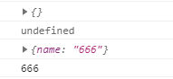
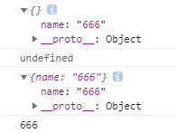
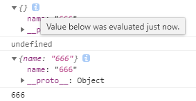
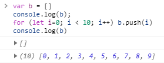
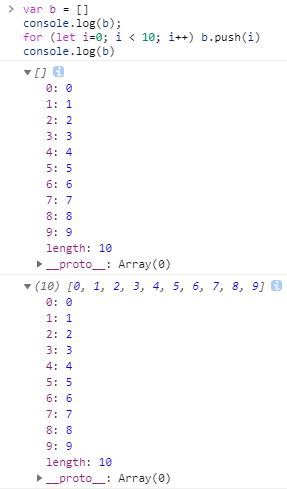
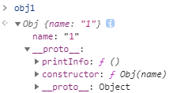

0. 前言
记录js使用过程中遇到的重难点。
1. 异步问题
js中大部分库函数（比如：setTimeout、ajax请求）都是异步的，即调用时不等待函数执行结束，就执行下一步。（这是为了浏览器的性能，JavaScript会将异步函数在主线程之外执行）
示例：
1 | function f1() { |
如果，一定要让f2()在f1()执行完setTimeout()之后执行，解决异步问题的一个简单办法是传入回调函数，改为：
1 | function f1(f) { |
2. this 指针
2.1. 匿名函数中this指向调用者对象，而箭头函数中的this指向上一层调用者对象
示例：
1 | var name = 'tom'; |
所以，在对象的方法定义中，不建议使用箭头函数。
2.2. 在回调函数中使用this指针的问题
首先：
- 对象A传入回调函数至对象B的方法后，该回调函数中的
this不会指向对象B。
其次：
- function定义的函数内部的
this指向于此函数的调用者（拥有者） - 箭头函数中的
this指向上一层调用者对象
1 | var obj1 = { |
2.3. 将对象A的方法赋给对象B的方法后。对象B调用该方法时，方法中this指针指向对象B
以下的为反面教材：
1 | var wsManager = { |
使用：
1 | wsManager.sendCommand(() => { |
后，当websocketOnMessage()函数接收到信息时，this.callback()为undefine。为什么呢？
因为传入wsManager.sendCommand()的回调函数，只赋给了wsManager对象中的callback属性，而未赋给wsManager.ws对象中的callback属性。
而调用wsManager.ws.onmessage = wsManager.websocketOnMessage()函数的为wsManager.ws对象，却并不是wsManager对象。
所以，wsManager.ws.onmessage()函数中的this.callback指向wsManager.ws.callback，而不指向wsManager.callback，因此为undefine。
3. console.log() 的神秘输出
在控制台输入以下代码：
1 | var a={} |
将会输出：

咋一看，没什么问题。但是，当你展开两个对象的括号时：

你会发现，第一个对象的输出中，竟然也有name属性，这是为什么呢？？？
因为，在js中对象是引用类型，所以console.log()拿到的对象值相当于指针。而在控制台中，当你展开输出对象的花括号时，控制台会重新从指针指向的内存中取值，所以，你会看到第二次添加的name属性出现在第一次的对象输出中。
而且，在你展开输出对象的花括号时，花括号旁边会出现一个i字符，鼠标放上去后，它会告诉你：

Value below was evaluated just now.下面的值刚刚才被估计。
同样，引用类型——数组也是如此：


4. 原型链

事情的起因，JavaScript被要求模仿Java，于是加入了new操作符：
1 | var obj = new FunctionName() |
虽然JavaScript是面向对象的语言，但它不是基于类的语言，它是一种基于原型的语言。
所以，FunctionName并不是类，而是构造函数，JavaScript是通过构造函数来创建对象的：
1 | function Obj(name) { |
不过，对于上述例子有个问题，如果多个实例对象通过同一个构造函数创建。虽然它们拥有各自的姓名，但它们的方法都是相同的，而每创建一个实例，都要创建相同的方法。这样并不节省内存。
在Java中，我们可以通过继承解决这个问题；而在JavaScript中，我们则通过原型(prototype)：
- 每一个构造函数都拥有一个
prototype属性，这个属性指向一个原型对象。当使用这个构造函数创建实例的时候，prototype属性指向的原型对象就成为实例的原型对象。 - 原型对象默认拥有一个
constructor属性，指向指向它的那个构造函数（也就是说构造函数和原型对象是互指的关系）。 - 每个对象都拥有一个隐藏的属性，指向它的原型对象，这个属性可以通过
Object.getPrototypeOf(obj)或obj.__proto__来访问。 - 实际上，构造函数的
prototype属性与它创建的实例对象的__proto__属性指向的是同一个原型对象，即对象.__proto__ === 函数.prototype。 - 所有的对象都是由它的原型对象继承而来。
- 所有的对象都可以作为原型对象存在。
- 访问对象的属性时，JavaScript会首先在对象自身的属性内查找，若没有找到，则会跳转到该对象的原型对象中查找。
对于上述例子，我们只需要如下改造：
1 | function Obj(name) { |
此时，我们输出obj，可以看到：

obj对象的__proto__属性指向它的原型对象，原型对象的constructor属性指向构造函数，原型对象的__proto__属性指向终极原型对象Object。这就是原型链。
同样，子类可以覆盖父类的方法，即对象可以覆盖原型对象的方法。
参考：